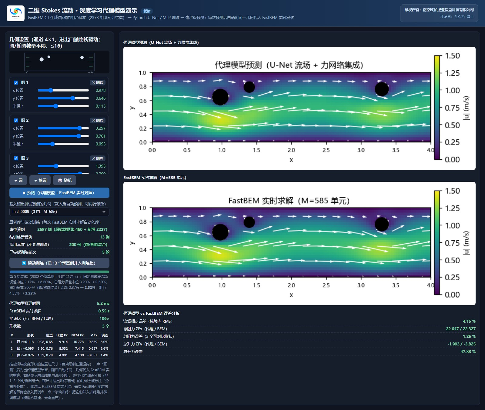

二维 Stokes 流动深度学习代理模型 桌面本地版
通道内圆柱 / 椭圆障碍绕流的实时代理软件 —— 几何随手画、受力毫秒出、边界元随时复核。
本软件以 FastBEM（南方科技大学 Y. J. Liu 教授的二维 Stokes 快速多极子边界元求解器）批量计算的 2,474 组算例为训练数据，构建了流场 U-Net 与五模型受力集成网络。在软件中用鼠标放置任意数量的圆 / 椭圆障碍， 即可在毫秒级得到全场流速分布与每个障碍物所受流体力的预测；同一几何还可一键交给 FastBEM 求解器实时复核， 并自动给出代理模型与边界元解的误差分析。软件在本机以网页界面运行，数据不出本机。

软件主界面：左侧为几何设置（4×1 通道实时预览，圆 / 椭圆数量不限，≤16 个），右侧为流场云图、 各障碍物受力表，以及 FastBEM 实时对照与误差分析。
主要功能
几何设置与实时显示 — 在通道画布上添加圆形 / 椭圆障碍，拖动参数滑块即时重绘，所见即所算。
重叠防错与自动寻位 — 障碍物间距自动校验，冲突修改自动回退；🎲 随机按钮在训练分布内一键生成算例。
毫秒级预测 — U-Net 全场流速 + 五模型集成受力，单次推理约 3 ms，交互无等待。
FastBEM 实时对照 — 同一几何自动交给边界元求解器独立求解，逐障碍物给出相对误差。
滚动再训练 — 每个成功的对照算例自动入库，一键微调模型并热切换，越用越准。
留出算例库 — 60 组未参与训练的测试算例，一键载入几何并自动预测，便于公平评估。
112 × 28 计算网格 · 流场相对误差中位 2.2%（p90 3.7%）· 总阻力相对误差中位 3.4%（留出测试集） · 代理推理约 3 ms vs 边界元约 550 ms（≈195× 加速）· 第 5 轮滚动训练
获取与运行
- 软件部署在作者本机（桌面本地版，数据不出本机）；本页面为软件介绍。
- 本机首次配置（一次性）：双击 FastBEM_StokesDL\注册软件协议.reg， 注册 stokes-surrogate:// 启动协议。
- 日常使用：直接点击下方按钮——本机启动器会自动启动服务并打开软件界面 （服务已在运行时直接打开界面）；也可双击 FastBEM_StokesDL\启动软件.bat 手动启动。
说明：软件仅通过作者本机的回环地址提供服务，不经互联网暴露，外部访客无法连接。
访客点击“启动本地软件”通常没有反应，属于正常现象——欢迎通过本页了解软件功能，
或通过 Home 页与作者联系洽谈演示与合作。
致谢与说明
生成训练数据与实时对照所用的 FastBEM 求解器由南方科技大学 Y. J. Liu 教授课题组开发， 依据其非商业学术授权使用，谨此致谢。